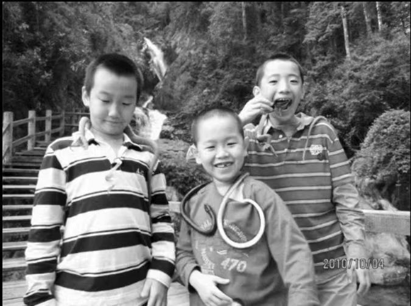
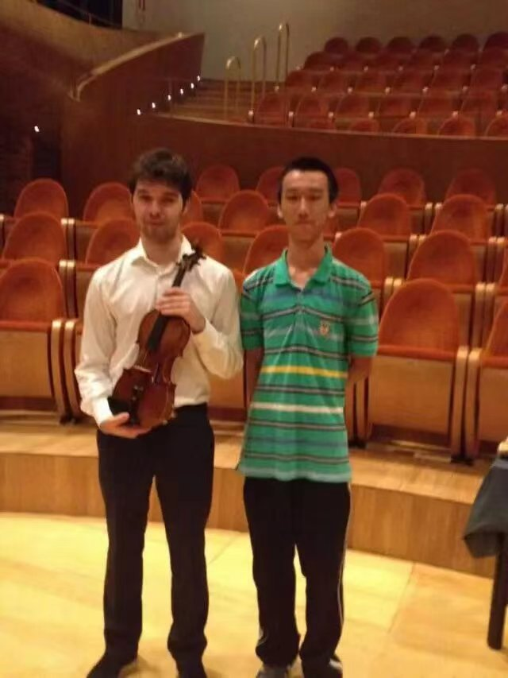
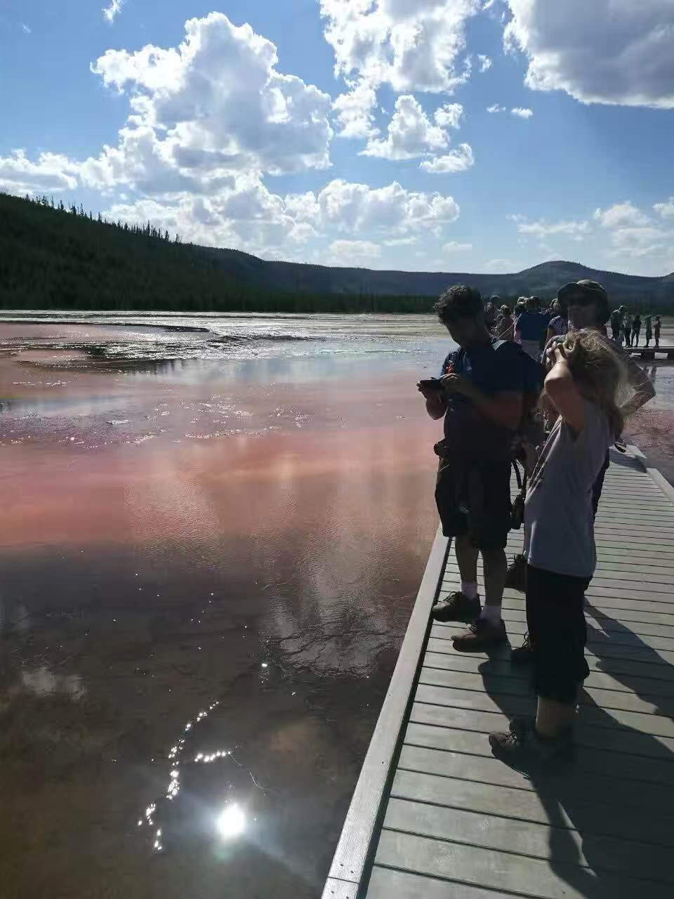
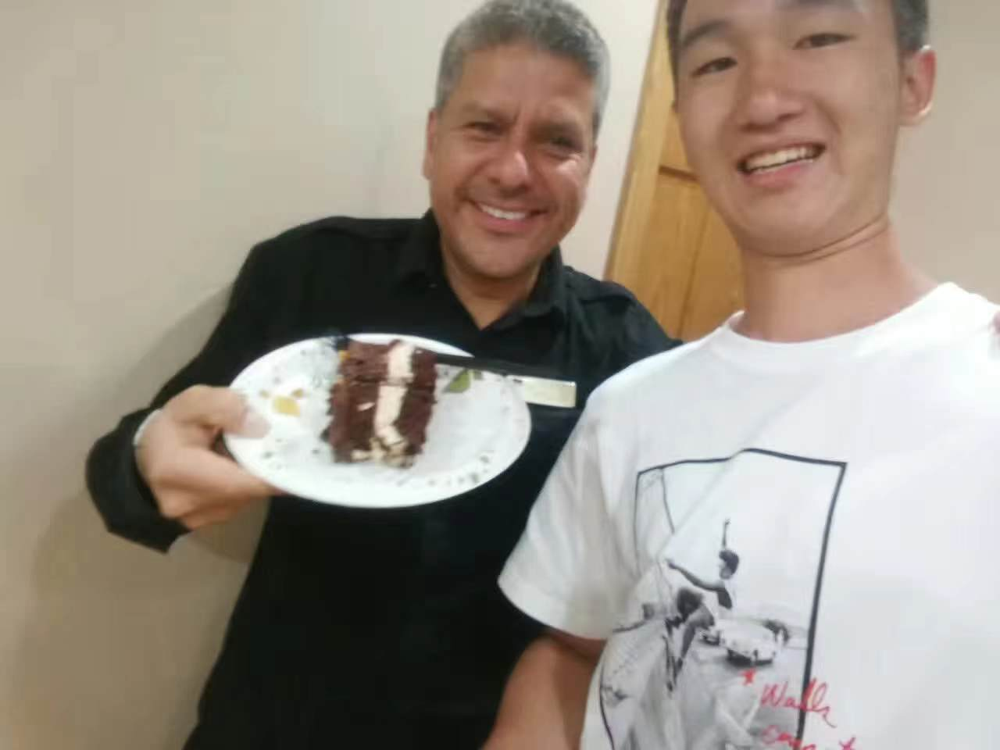

I was born in Shenzhen in 2001, together with my
cousin who is one year older than me and my cousin who is three years younger than me. Although
we are not brothers, our friendship from childhood has allowed us to spend a happy childhood.
My fourth grade in primary school was a surprise
and exciting time, because by chance, I could go to Canada to complete the last two years of
primary school. I stayed with a host family and made great memories in Canada.
After entering junior high school, I started my
exploration of China and the world because I love traveling. In the winter vacation
my mother and I went to Harbin, the northernmost city in China. And I saw snow for the first
time.

I began to learn the violin at the age of three
and
finished the examination of grade 10 in grade two. This time I had the honor to share the stage
with
the world famous violinist, and left a picture.
In the second year of junior high school,
the Children's Palace band I was in was invited to perform in Italy, and my mother and
I went to Venice, city of water under the sponsorship. We had a great time there.
We went to Florence, Italy to perform.
After the performance, we received warm applause from the audience. Because of such a successful
performance,
I accepted the award from the mayor as the violin chief and took a photo with the orchestra
director.

In high school, my family and I have a trip
to the United States,
and went to the world famous Yellowstone Park, the witness of colorful pool reflect the
increadible craft of nature and astonished us.

On a trip to the United States, it happened
to be my birthday, we bought a cake to celebrate in the hotel canteen, the hotel manager
was there, we shared the cake with him and took a photo together.
In the second year of high school, I started to
learn and play drum,
due to the blink idea from me and my friend. We both eager of rock and roll, why shouldn't we
form a band. The
debut was invited to a club.
Graduated from high school
That was the first time I felt myself grew up a
little
bit. When the College entrance exam over, sorrow of farewell mixed with the exciting mood of
exploring new chapters
in university was memorible.
After graduating from high school,
it is the summer vacation when you can relax and travel. My family and I went to Xi 'an,
a city in northwest China, and climbed Huashan at night. After 7 hours, finally seeing
the sunrise at the top of the it.
Life in university was dramatic. In the second
year, we've encountered a terrible
epidemic. Quarantine in dormitory or home ruins the best years of youth, along with the desire
of travel. But I love
my major, and my undergraduate school.
Now, I'm having my postgraduate study in HKBU,
which
was a quite big challenge to me. As my major was basically focus on hardware in undergraduate
school.
AI contains so many new and fresh knowledge to me. Luckily I love it.